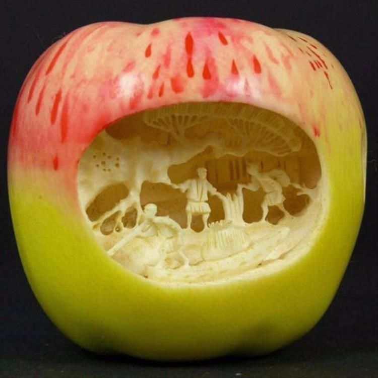

HOME

MYTHS ABOUT EATING DISORDERS
1.You have to be underweight to have an eating disorder.
2. Only teenage girls and young women are affected by eating disorders.
3.People with eating disorders are vain i.e driven by obsession over food.
4.Eating disorders aren't really that dangerous.
WARNING SIGNS OF AN EATING DISORDER
1.Restricting food or dieting.
2.Binge-eating.
3.Purging.
4.Distorted body image and altered appearance.
In extreme cases, eating disorders can even lead to death. If you or someone you know has them, contact a professional therapist.
To register for our personalised therapy sessions, click below.
BOOK APPOINTMENT
Warm regards,
Mental Wellness Kenya